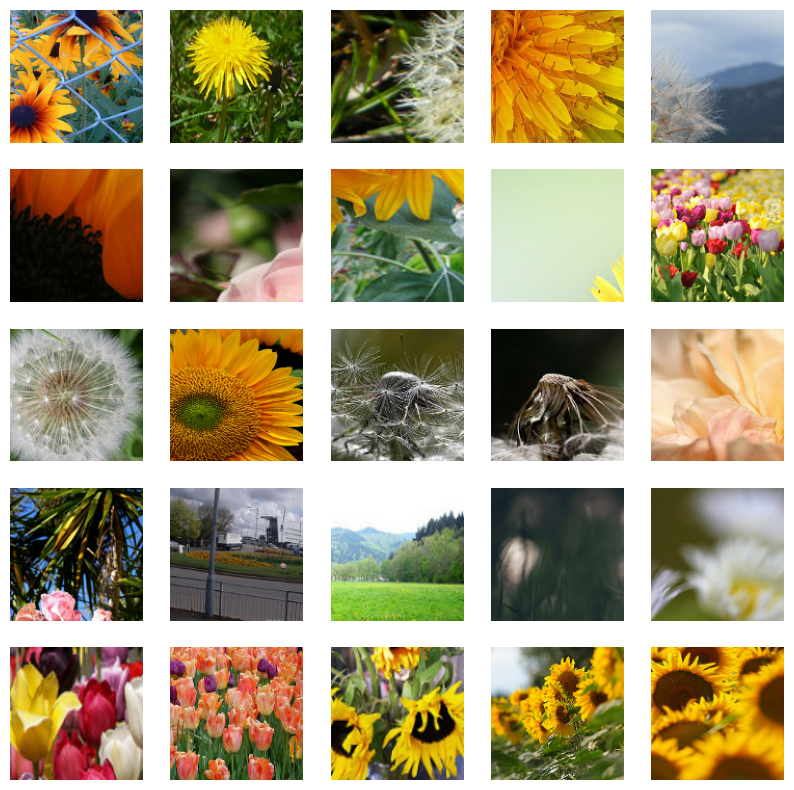
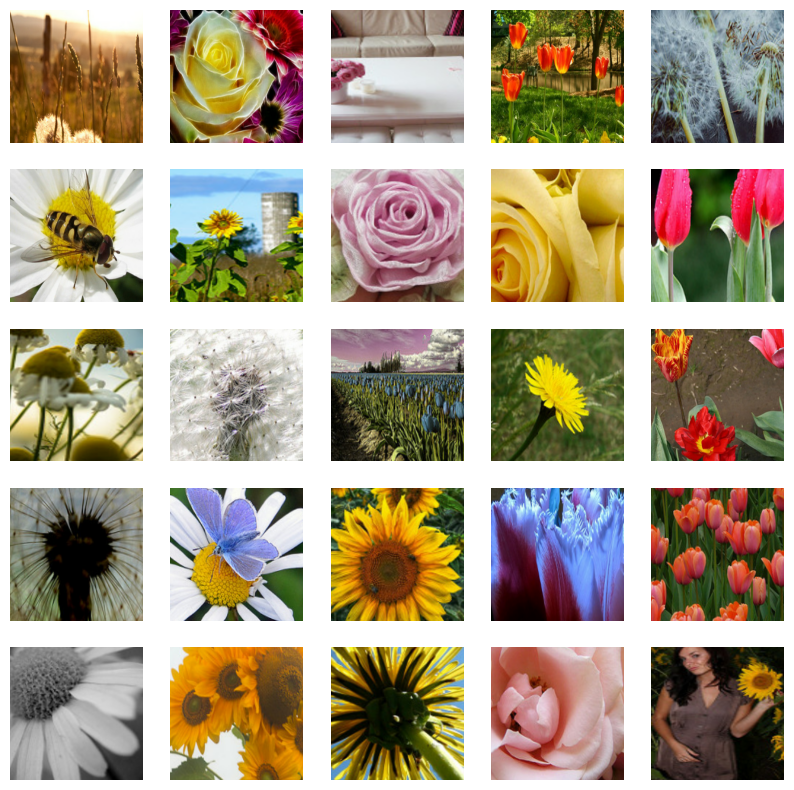
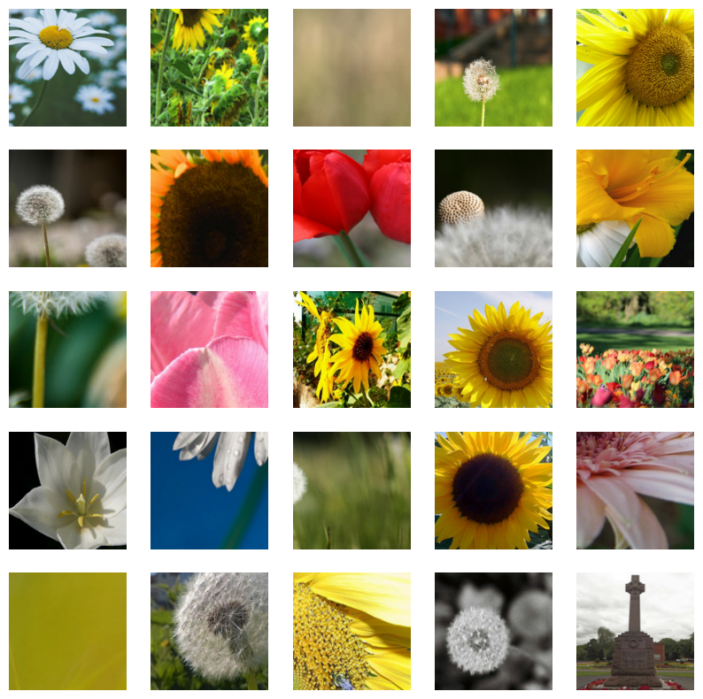

FixRes: Fixing train-test resolution discrepancy
Author: Sayak Paul
Date created: 2021/10/08
Last modified: 2021/10/10
Description: Mitigating resolution discrepancy between training and test sets.

Introduction
It is a common practice to use the same input image resolution while training and testing vision models. However, as investigated in Fixing the train-test resolution discrepancy (Touvron et al.), this practice leads to suboptimal performance. Data augmentation is an indispensable part of the training process of deep neural networks. For vision models, we typically use random resized crops during training and center crops during inference. This introduces a discrepancy in the object sizes seen during training and inference. As shown by Touvron et al., if we can fix this discrepancy, we can significantly boost model performance.
In this example, we implement the FixRes techniques introduced by Touvron et al. to fix this discrepancy.
Imports
import keras
from keras import layers
import tensorflow as tf # just for image processing and pipeline
import tensorflow_datasets as tfds
tfds.disable_progress_bar()
import matplotlib.pyplot as plt
Load the tf_flowers dataset
train_dataset, val_dataset = tfds.load(
"tf_flowers", split=["train[:90%]", "train[90%:]"], as_supervised=True
)
num_train = train_dataset.cardinality()
num_val = val_dataset.cardinality()
print(f"Number of training examples: {num_train}")
print(f"Number of validation examples: {num_val}")
Number of training examples: 3303
Number of validation examples: 367
Data preprocessing utilities
We create three datasets:
- A dataset with a smaller resolution - 128x128.
- Two datasets with a larger resolution - 224x224.
We will apply different augmentation transforms to the larger-resolution datasets.
The idea of FixRes is to first train a model on a smaller resolution dataset and then fine-tune it on a larger resolution dataset. This simple yet effective recipe leads to non-trivial performance improvements. Please refer to the original paper for results.
# Reference: https://github.com/facebookresearch/FixRes/blob/main/transforms_v2.py.
batch_size = 32
auto = tf.data.AUTOTUNE
smaller_size = 128
bigger_size = 224
size_for_resizing = int((bigger_size / smaller_size) * bigger_size)
central_crop_layer = layers.CenterCrop(bigger_size, bigger_size)
def preprocess_initial(train, image_size):
"""Initial preprocessing function for training on smaller resolution.
For training, do random_horizontal_flip -> random_crop.
For validation, just resize.
No color-jittering has been used.
"""
def _pp(image, label, train):
if train:
channels = image.shape[-1]
begin, size, _ = tf.image.sample_distorted_bounding_box(
tf.shape(image),
tf.zeros([0, 0, 4], tf.float32),
area_range=(0.05, 1.0),
min_object_covered=0,
use_image_if_no_bounding_boxes=True,
)
image = tf.slice(image, begin, size)
image.set_shape([None, None, channels])
image = tf.image.resize(image, [image_size, image_size])
image = tf.image.random_flip_left_right(image)
else:
image = tf.image.resize(image, [image_size, image_size])
return image, label
return _pp
def preprocess_finetune(image, label, train):
"""Preprocessing function for fine-tuning on a higher resolution.
For training, resize to a bigger resolution to maintain the ratio ->
random_horizontal_flip -> center_crop.
For validation, do the same without any horizontal flipping.
No color-jittering has been used.
"""
image = tf.image.resize(image, [size_for_resizing, size_for_resizing])
if train:
image = tf.image.random_flip_left_right(image)
image = central_crop_layer(image[None, ...])[0]
return image, label
def make_dataset(
dataset: tf.data.Dataset,
train: bool,
image_size: int = smaller_size,
fixres: bool = True,
num_parallel_calls=auto,
):
if image_size not in [smaller_size, bigger_size]:
raise ValueError(f"{image_size} resolution is not supported.")
# Determine which preprocessing function we are using.
if image_size == smaller_size:
preprocess_func = preprocess_initial(train, image_size)
elif not fixres and image_size == bigger_size:
preprocess_func = preprocess_initial(train, image_size)
else:
preprocess_func = preprocess_finetune
dataset = dataset.map(
lambda x, y: preprocess_func(x, y, train),
num_parallel_calls=num_parallel_calls,
)
dataset = dataset.batch(batch_size)
if train:
dataset = dataset.shuffle(batch_size * 10)
return dataset.prefetch(num_parallel_calls)
Notice how the augmentation transforms vary for the kind of dataset we are preparing.
Prepare datasets
initial_train_dataset = make_dataset(train_dataset, train=True, image_size=smaller_size)
initial_val_dataset = make_dataset(val_dataset, train=False, image_size=smaller_size)
finetune_train_dataset = make_dataset(train_dataset, train=True, image_size=bigger_size)
finetune_val_dataset = make_dataset(val_dataset, train=False, image_size=bigger_size)
vanilla_train_dataset = make_dataset(
train_dataset, train=True, image_size=bigger_size, fixres=False
)
vanilla_val_dataset = make_dataset(
val_dataset, train=False, image_size=bigger_size, fixres=False
)
Visualize the datasets
def visualize_dataset(batch_images):
plt.figure(figsize=(10, 10))
for n in range(25):
ax = plt.subplot(5, 5, n + 1)
plt.imshow(batch_images[n].numpy().astype("int"))
plt.axis("off")
plt.show()
print(f"Batch shape: {batch_images.shape}.")
# Smaller resolution.
initial_sample_images, _ = next(iter(initial_train_dataset))
visualize_dataset(initial_sample_images)
# Bigger resolution, only for fine-tuning.
finetune_sample_images, _ = next(iter(finetune_train_dataset))
visualize_dataset(finetune_sample_images)
# Bigger resolution, with the same augmentation transforms as
# the smaller resolution dataset.
vanilla_sample_images, _ = next(iter(vanilla_train_dataset))
visualize_dataset(vanilla_sample_images)

Batch shape: (32, 128, 128, 3).

Batch shape: (32, 224, 224, 3).

Batch shape: (32, 224, 224, 3).
Model training utilities
We train multiple variants of ResNet50V2 (He et al.):
- On the smaller resolution dataset (128x128). It will be trained from scratch.
- Then fine-tune the model from 1 on the larger resolution (224x224) dataset.
- Train another ResNet50V2 from scratch on the larger resolution dataset.
As a reminder, the larger resolution datasets differ in terms of their augmentation transforms.
def get_training_model(num_classes=5):
inputs = layers.Input((None, None, 3))
resnet_base = keras.applications.ResNet50V2(
include_top=False, weights=None, pooling="avg"
)
resnet_base.trainable = True
x = layers.Rescaling(scale=1.0 / 127.5, offset=-1)(inputs)
x = resnet_base(x)
outputs = layers.Dense(num_classes, activation="softmax")(x)
return keras.Model(inputs, outputs)
def train_and_evaluate(
model,
train_ds,
val_ds,
epochs,
learning_rate=1e-3,
use_early_stopping=False,
):
optimizer = keras.optimizers.Adam(learning_rate=learning_rate)
model.compile(
optimizer=optimizer,
loss="sparse_categorical_crossentropy",
metrics=["accuracy"],
)
if use_early_stopping:
es_callback = keras.callbacks.EarlyStopping(patience=5)
callbacks = [es_callback]
else:
callbacks = None
model.fit(
train_ds,
validation_data=val_ds,
epochs=epochs,
callbacks=callbacks,
)
_, accuracy = model.evaluate(val_ds)
print(f"Top-1 accuracy on the validation set: {accuracy*100:.2f}%.")
return model
Experiment 1: Train on 128x128 and then fine-tune on 224x224
epochs = 30
smaller_res_model = get_training_model()
smaller_res_model = train_and_evaluate(
smaller_res_model, initial_train_dataset, initial_val_dataset, epochs
)
Epoch 1/30
104/104 ━━━━━━━━━━━━━━━━━━━━ 56s 299ms/step - accuracy: 0.4146 - loss: 1.7349 - val_accuracy: 0.2234 - val_loss: 2.0703
Epoch 2/30
104/104 ━━━━━━━━━━━━━━━━━━━━ 4s 36ms/step - accuracy: 0.5062 - loss: 1.2458 - val_accuracy: 0.3896 - val_loss: 1.5800
Epoch 3/30
104/104 ━━━━━━━━━━━━━━━━━━━━ 4s 36ms/step - accuracy: 0.5262 - loss: 1.1733 - val_accuracy: 0.5940 - val_loss: 1.0160
Epoch 4/30
104/104 ━━━━━━━━━━━━━━━━━━━━ 4s 37ms/step - accuracy: 0.5740 - loss: 1.1021 - val_accuracy: 0.5967 - val_loss: 1.6164
Epoch 5/30
104/104 ━━━━━━━━━━━━━━━━━━━━ 4s 36ms/step - accuracy: 0.6160 - loss: 1.0289 - val_accuracy: 0.5313 - val_loss: 1.2465
Epoch 6/30
104/104 ━━━━━━━━━━━━━━━━━━━━ 4s 36ms/step - accuracy: 0.6137 - loss: 1.0286 - val_accuracy: 0.6431 - val_loss: 0.8564
Epoch 7/30
104/104 ━━━━━━━━━━━━━━━━━━━━ 4s 36ms/step - accuracy: 0.6237 - loss: 0.9760 - val_accuracy: 0.6240 - val_loss: 1.0114
Epoch 8/30
104/104 ━━━━━━━━━━━━━━━━━━━━ 4s 36ms/step - accuracy: 0.6029 - loss: 0.9994 - val_accuracy: 0.5804 - val_loss: 1.0331
Epoch 9/30
104/104 ━━━━━━━━━━━━━━━━━━━━ 4s 36ms/step - accuracy: 0.6419 - loss: 0.9555 - val_accuracy: 0.6403 - val_loss: 0.8417
Epoch 10/30
104/104 ━━━━━━━━━━━━━━━━━━━━ 4s 36ms/step - accuracy: 0.6513 - loss: 0.9333 - val_accuracy: 0.6376 - val_loss: 1.0658
Epoch 11/30
104/104 ━━━━━━━━━━━━━━━━━━━━ 4s 36ms/step - accuracy: 0.6316 - loss: 0.9637 - val_accuracy: 0.5913 - val_loss: 1.5650
Epoch 12/30
104/104 ━━━━━━━━━━━━━━━━━━━━ 4s 36ms/step - accuracy: 0.6542 - loss: 0.9047 - val_accuracy: 0.6458 - val_loss: 0.9613
Epoch 13/30
104/104 ━━━━━━━━━━━━━━━━━━━━ 4s 36ms/step - accuracy: 0.6551 - loss: 0.8946 - val_accuracy: 0.6866 - val_loss: 0.8427
Epoch 14/30
104/104 ━━━━━━━━━━━━━━━━━━━━ 4s 36ms/step - accuracy: 0.6617 - loss: 0.8848 - val_accuracy: 0.7003 - val_loss: 0.9339
Epoch 15/30
104/104 ━━━━━━━━━━━━━━━━━━━━ 4s 36ms/step - accuracy: 0.6455 - loss: 0.9293 - val_accuracy: 0.6757 - val_loss: 0.9453
Epoch 16/30
104/104 ━━━━━━━━━━━━━━━━━━━━ 4s 36ms/step - accuracy: 0.6821 - loss: 0.8481 - val_accuracy: 0.7466 - val_loss: 0.7237
Epoch 17/30
104/104 ━━━━━━━━━━━━━━━━━━━━ 4s 36ms/step - accuracy: 0.6750 - loss: 0.8449 - val_accuracy: 0.5967 - val_loss: 1.5579
Epoch 18/30
104/104 ━━━━━━━━━━━━━━━━━━━━ 4s 37ms/step - accuracy: 0.6765 - loss: 0.8605 - val_accuracy: 0.6921 - val_loss: 0.8136
Epoch 19/30
104/104 ━━━━━━━━━━━━━━━━━━━━ 4s 36ms/step - accuracy: 0.6969 - loss: 0.8140 - val_accuracy: 0.6131 - val_loss: 1.0785
Epoch 20/30
104/104 ━━━━━━━━━━━━━━━━━━━━ 4s 36ms/step - accuracy: 0.6831 - loss: 0.8257 - val_accuracy: 0.7221 - val_loss: 0.7480
Epoch 21/30
104/104 ━━━━━━━━━━━━━━━━━━━━ 4s 36ms/step - accuracy: 0.6988 - loss: 0.8008 - val_accuracy: 0.7193 - val_loss: 0.7953
Epoch 22/30
104/104 ━━━━━━━━━━━━━━━━━━━━ 4s 36ms/step - accuracy: 0.7172 - loss: 0.7578 - val_accuracy: 0.6730 - val_loss: 1.1628
Epoch 23/30
104/104 ━━━━━━━━━━━━━━━━━━━━ 4s 36ms/step - accuracy: 0.6935 - loss: 0.8126 - val_accuracy: 0.7357 - val_loss: 0.6565
Epoch 24/30
104/104 ━━━━━━━━━━━━━━━━━━━━ 4s 36ms/step - accuracy: 0.7149 - loss: 0.7568 - val_accuracy: 0.7439 - val_loss: 0.8830
Epoch 25/30
104/104 ━━━━━━━━━━━━━━━━━━━━ 4s 36ms/step - accuracy: 0.7151 - loss: 0.7510 - val_accuracy: 0.7248 - val_loss: 0.7459
Epoch 26/30
104/104 ━━━━━━━━━━━━━━━━━━━━ 4s 36ms/step - accuracy: 0.7133 - loss: 0.7838 - val_accuracy: 0.7084 - val_loss: 0.7140
Epoch 27/30
104/104 ━━━━━━━━━━━━━━━━━━━━ 4s 36ms/step - accuracy: 0.7314 - loss: 0.7386 - val_accuracy: 0.6730 - val_loss: 1.5988
Epoch 28/30
104/104 ━━━━━━━━━━━━━━━━━━━━ 4s 36ms/step - accuracy: 0.7259 - loss: 0.7417 - val_accuracy: 0.7275 - val_loss: 0.7255
Epoch 29/30
104/104 ━━━━━━━━━━━━━━━━━━━━ 4s 36ms/step - accuracy: 0.7006 - loss: 0.7863 - val_accuracy: 0.6621 - val_loss: 1.5714
Epoch 30/30
104/104 ━━━━━━━━━━━━━━━━━━━━ 4s 36ms/step - accuracy: 0.7115 - loss: 0.7498 - val_accuracy: 0.7548 - val_loss: 0.7067
12/12 ━━━━━━━━━━━━━━━━━━━━ 0s 14ms/step - accuracy: 0.7207 - loss: 0.8735
Top-1 accuracy on the validation set: 75.48%.
Freeze all the layers except for the final Batch Normalization layer
For fine-tuning, we train only two layers:
- The final Batch Normalization (Ioffe et al.) layer.
- The classification layer.
We are unfreezing the final Batch Normalization layer to compensate for the change in activation statistics before the global average pooling layer. As shown in the paper, unfreezing the final Batch Normalization layer is enough.
For a comprehensive guide on fine-tuning models in Keras, refer to this tutorial.
for layer in smaller_res_model.layers[2].layers:
layer.trainable = False
smaller_res_model.layers[2].get_layer("post_bn").trainable = True
epochs = 10
# Use a lower learning rate during fine-tuning.
bigger_res_model = train_and_evaluate(
smaller_res_model,
finetune_train_dataset,
finetune_val_dataset,
epochs,
learning_rate=1e-4,
)
Epoch 1/10
104/104 ━━━━━━━━━━━━━━━━━━━━ 26s 158ms/step - accuracy: 0.6890 - loss: 0.8791 - val_accuracy: 0.7548 - val_loss: 0.7801
Epoch 2/10
104/104 ━━━━━━━━━━━━━━━━━━━━ 6s 34ms/step - accuracy: 0.7372 - loss: 0.8209 - val_accuracy: 0.7466 - val_loss: 0.7866
Epoch 3/10
104/104 ━━━━━━━━━━━━━━━━━━━━ 6s 34ms/step - accuracy: 0.7532 - loss: 0.7925 - val_accuracy: 0.7520 - val_loss: 0.7779
Epoch 4/10
104/104 ━━━━━━━━━━━━━━━━━━━━ 6s 34ms/step - accuracy: 0.7417 - loss: 0.7833 - val_accuracy: 0.7439 - val_loss: 0.7625
Epoch 5/10
104/104 ━━━━━━━━━━━━━━━━━━━━ 6s 34ms/step - accuracy: 0.7508 - loss: 0.7624 - val_accuracy: 0.7439 - val_loss: 0.7449
Epoch 6/10
104/104 ━━━━━━━━━━━━━━━━━━━━ 6s 34ms/step - accuracy: 0.7542 - loss: 0.7406 - val_accuracy: 0.7493 - val_loss: 0.7220
Epoch 7/10
104/104 ━━━━━━━━━━━━━━━━━━━━ 6s 34ms/step - accuracy: 0.7471 - loss: 0.7716 - val_accuracy: 0.7520 - val_loss: 0.7111
Epoch 8/10
104/104 ━━━━━━━━━━━━━━━━━━━━ 6s 35ms/step - accuracy: 0.7580 - loss: 0.7082 - val_accuracy: 0.7548 - val_loss: 0.6939
Epoch 9/10
104/104 ━━━━━━━━━━━━━━━━━━━━ 6s 34ms/step - accuracy: 0.7571 - loss: 0.7121 - val_accuracy: 0.7520 - val_loss: 0.6915
Epoch 10/10
104/104 ━━━━━━━━━━━━━━━━━━━━ 6s 34ms/step - accuracy: 0.7482 - loss: 0.7285 - val_accuracy: 0.7520 - val_loss: 0.6830
12/12 ━━━━━━━━━━━━━━━━━━━━ 0s 34ms/step - accuracy: 0.7296 - loss: 0.7253
Top-1 accuracy on the validation set: 75.20%.
Experiment 2: Train a model on 224x224 resolution from scratch
Now, we train another model from scratch on the larger resolution dataset. Recall that the augmentation transforms used in this dataset are different from before.
epochs = 30
vanilla_bigger_res_model = get_training_model()
vanilla_bigger_res_model = train_and_evaluate(
vanilla_bigger_res_model, vanilla_train_dataset, vanilla_val_dataset, epochs
)
Epoch 1/30
104/104 ━━━━━━━━━━━━━━━━━━━━ 58s 318ms/step - accuracy: 0.4148 - loss: 1.6685 - val_accuracy: 0.2807 - val_loss: 1.5614
Epoch 2/30
104/104 ━━━━━━━━━━━━━━━━━━━━ 10s 84ms/step - accuracy: 0.5137 - loss: 1.2569 - val_accuracy: 0.3324 - val_loss: 1.4950
Epoch 3/30
104/104 ━━━━━━━━━━━━━━━━━━━━ 10s 84ms/step - accuracy: 0.5582 - loss: 1.1617 - val_accuracy: 0.5395 - val_loss: 1.0945
Epoch 4/30
104/104 ━━━━━━━━━━━━━━━━━━━━ 10s 84ms/step - accuracy: 0.5559 - loss: 1.1420 - val_accuracy: 0.5123 - val_loss: 1.5154
Epoch 5/30
104/104 ━━━━━━━━━━━━━━━━━━━━ 10s 84ms/step - accuracy: 0.6036 - loss: 1.0731 - val_accuracy: 0.4823 - val_loss: 1.2676
Epoch 6/30
104/104 ━━━━━━━━━━━━━━━━━━━━ 10s 84ms/step - accuracy: 0.5376 - loss: 1.1810 - val_accuracy: 0.4496 - val_loss: 3.5370
Epoch 7/30
104/104 ━━━━━━━━━━━━━━━━━━━━ 10s 84ms/step - accuracy: 0.6216 - loss: 0.9956 - val_accuracy: 0.5804 - val_loss: 1.0637
Epoch 8/30
104/104 ━━━━━━━━━━━━━━━━━━━━ 10s 84ms/step - accuracy: 0.6209 - loss: 0.9915 - val_accuracy: 0.5613 - val_loss: 1.1856
Epoch 9/30
104/104 ━━━━━━━━━━━━━━━━━━━━ 10s 84ms/step - accuracy: 0.6229 - loss: 0.9657 - val_accuracy: 0.6076 - val_loss: 1.0131
Epoch 10/30
104/104 ━━━━━━━━━━━━━━━━━━━━ 10s 84ms/step - accuracy: 0.6322 - loss: 0.9654 - val_accuracy: 0.6022 - val_loss: 1.1179
Epoch 11/30
104/104 ━━━━━━━━━━━━━━━━━━━━ 10s 84ms/step - accuracy: 0.6223 - loss: 0.9634 - val_accuracy: 0.6458 - val_loss: 0.8731
Epoch 12/30
104/104 ━━━━━━━━━━━━━━━━━━━━ 10s 84ms/step - accuracy: 0.6414 - loss: 0.9838 - val_accuracy: 0.6975 - val_loss: 0.8202
Epoch 13/30
104/104 ━━━━━━━━━━━━━━━━━━━━ 10s 84ms/step - accuracy: 0.6635 - loss: 0.8912 - val_accuracy: 0.6730 - val_loss: 0.8018
Epoch 14/30
104/104 ━━━━━━━━━━━━━━━━━━━━ 10s 84ms/step - accuracy: 0.6571 - loss: 0.8915 - val_accuracy: 0.5640 - val_loss: 1.2489
Epoch 15/30
104/104 ━━━━━━━━━━━━━━━━━━━━ 10s 84ms/step - accuracy: 0.6725 - loss: 0.8788 - val_accuracy: 0.6240 - val_loss: 1.0039
Epoch 16/30
104/104 ━━━━━━━━━━━━━━━━━━━━ 10s 84ms/step - accuracy: 0.6776 - loss: 0.8630 - val_accuracy: 0.6322 - val_loss: 1.0803
Epoch 17/30
104/104 ━━━━━━━━━━━━━━━━━━━━ 10s 84ms/step - accuracy: 0.6728 - loss: 0.8673 - val_accuracy: 0.7330 - val_loss: 0.7256
Epoch 18/30
104/104 ━━━━━━━━━━━━━━━━━━━━ 10s 85ms/step - accuracy: 0.6969 - loss: 0.8069 - val_accuracy: 0.7275 - val_loss: 0.8264
Epoch 19/30
104/104 ━━━━━━━━━━━━━━━━━━━━ 10s 85ms/step - accuracy: 0.6891 - loss: 0.8271 - val_accuracy: 0.6594 - val_loss: 0.9932
Epoch 20/30
104/104 ━━━━━━━━━━━━━━━━━━━━ 10s 85ms/step - accuracy: 0.6678 - loss: 0.8630 - val_accuracy: 0.7221 - val_loss: 0.7238
Epoch 21/30
104/104 ━━━━━━━━━━━━━━━━━━━━ 10s 84ms/step - accuracy: 0.6980 - loss: 0.7991 - val_accuracy: 0.6267 - val_loss: 0.8916
Epoch 22/30
104/104 ━━━━━━━━━━━━━━━━━━━━ 10s 85ms/step - accuracy: 0.7187 - loss: 0.7546 - val_accuracy: 0.7466 - val_loss: 0.6844
Epoch 23/30
104/104 ━━━━━━━━━━━━━━━━━━━━ 10s 85ms/step - accuracy: 0.7210 - loss: 0.7491 - val_accuracy: 0.6676 - val_loss: 1.1051
Epoch 24/30
104/104 ━━━━━━━━━━━━━━━━━━━━ 10s 84ms/step - accuracy: 0.6930 - loss: 0.7762 - val_accuracy: 0.7493 - val_loss: 0.6720
Epoch 25/30
104/104 ━━━━━━━━━━━━━━━━━━━━ 10s 84ms/step - accuracy: 0.7192 - loss: 0.7706 - val_accuracy: 0.7357 - val_loss: 0.7281
Epoch 26/30
104/104 ━━━━━━━━━━━━━━━━━━━━ 10s 84ms/step - accuracy: 0.7227 - loss: 0.7339 - val_accuracy: 0.7602 - val_loss: 0.6618
Epoch 27/30
104/104 ━━━━━━━━━━━━━━━━━━━━ 10s 84ms/step - accuracy: 0.7108 - loss: 0.7641 - val_accuracy: 0.7057 - val_loss: 0.8372
Epoch 28/30
104/104 ━━━━━━━━━━━━━━━━━━━━ 10s 84ms/step - accuracy: 0.7186 - loss: 0.7644 - val_accuracy: 0.7657 - val_loss: 0.5906
Epoch 29/30
104/104 ━━━━━━━━━━━━━━━━━━━━ 10s 84ms/step - accuracy: 0.7166 - loss: 0.7394 - val_accuracy: 0.7820 - val_loss: 0.6294
Epoch 30/30
104/104 ━━━━━━━━━━━━━━━━━━━━ 10s 84ms/step - accuracy: 0.7122 - loss: 0.7655 - val_accuracy: 0.7139 - val_loss: 0.8012
12/12 ━━━━━━━━━━━━━━━━━━━━ 0s 33ms/step - accuracy: 0.6797 - loss: 0.8819
Top-1 accuracy on the validation set: 71.39%.
As we can notice from the above cells, FixRes leads to a better performance. Another advantage of FixRes is the improved total training time and reduction in GPU memory usage. FixRes is model-agnostic, you can use it on any image classification model to potentially boost performance.
You can find more results here that were gathered by running the same code with different random seeds.